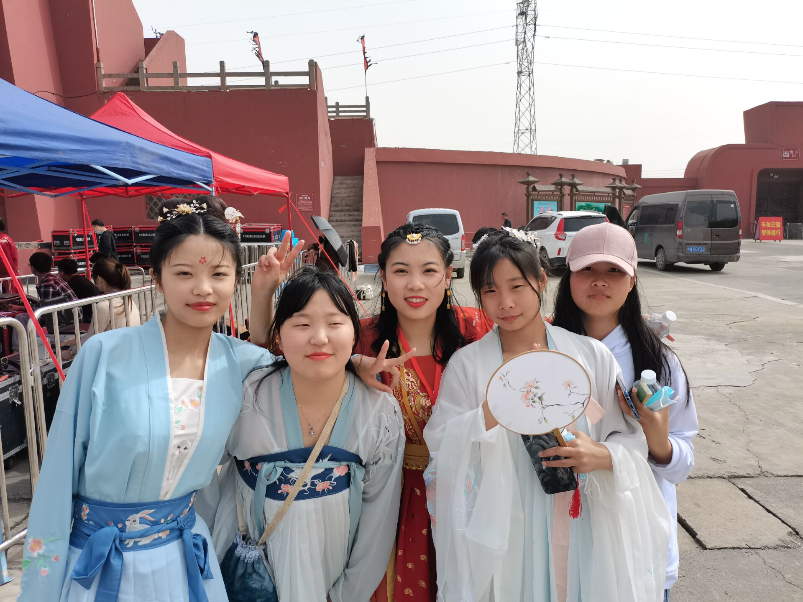
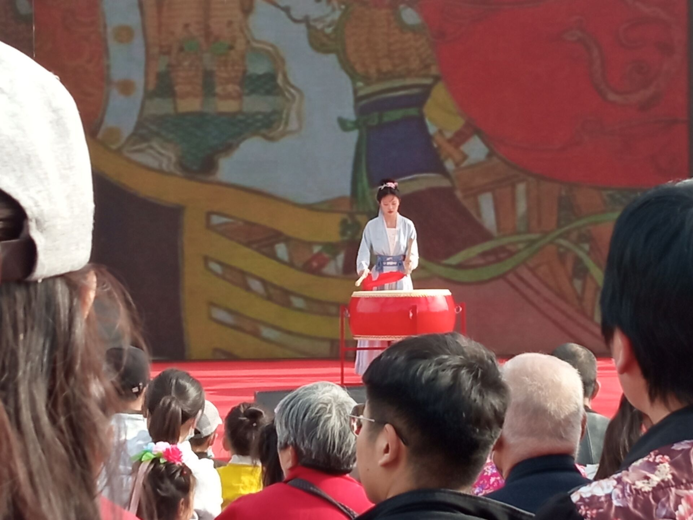
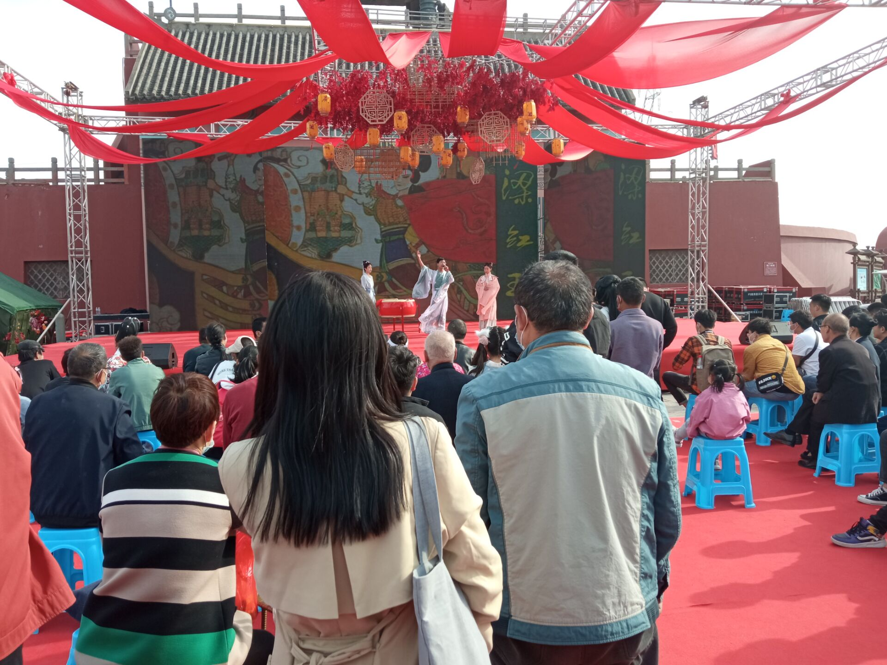

HPU大学生传统文化社团
社团简介
社团简介
大学生传统文化协会 大学生传统文化协会成立于2007年5月，成立以来协会坚持致力于”弘扬中华优秀传统文化，传承文化精华薪火”。大学生传统文化协会已发展为以展览传统文化和名师解析中国传统为特色，同时兼顾写作交流，文学作品赏析等的文化
#传协要闻#
梁红玉舞台剧
梁红玉舞台剧
不知道小栗子们上周末有没有去焦作影视城举办的第二届焦作汉服动漫文化活动中玩啊，社团的小哥哥小姐姐们在文化节中表演了舞台剧《梁红玉》。 舞台剧《梁红玉》以梁红玉夫妇共同抵抗金兵故事为背景，将戏剧、古风舞蹈、击鼓等表演融合于献计、击鼓、任命、操练等场次中，旨在以华服文化的形式歌颂梁红玉伟大爱国精神和巾帼不让须眉的精神，弘扬传统文化和社会主义核心价值观。 此次舞台剧的成功演出，充分彰显了社团风采，并进一步传承和发展了中国传统文化，希望同学们也能够对中国传统文化更加感兴趣。
 |  |
| > |  |
|  |  |
六大部门
社团的最近动态
网站作者的B站 我们社团的空间 河南理工大学Sakura
彼は酷く打ちのめされていた
他被狠狠的打击了
助けなどいない、強くなった
无人可依，愈发强大
立ち上がるしかなかった
只能毅然站起
運命を求めて
找寻自己的
旅に行ってる
踏上了旅途
それが彼の伝説
这就是他的传说
子页面